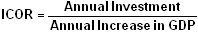

A metric that assesses the marginal amount of investment capital necessary for an entity to generate the next unit of production. Overall, a higher ICOR value is not preferred because it indicates that the entity's production is inefficient. The measure is used predominantly in determining a country's level of production efficiency.
ICOR is calculated as:
For example, suppose that Country X has an ICOR of 10. This implies that $10 worth of capital investment is necessary to generate $1 of extra production. Furthermore, if country X's ICOR was 12 last year, this implies that Country X has become more efficient in its use of capital.
Some critics of ICOR have suggested that its uses are restricted as there is a limit to how efficient countries can become as their processes become increasingly advanced. For example, a developing country can theoretically increase its GDP by a greater margin with a set amount of resources than its developed counterpart can. This is because the developed country is already operating with the highest level of technology and infrastructure. Any further improvements would have to come from more costly research and development, whereas the developing country can implement existing technology to improve its situation.
{kind=link}